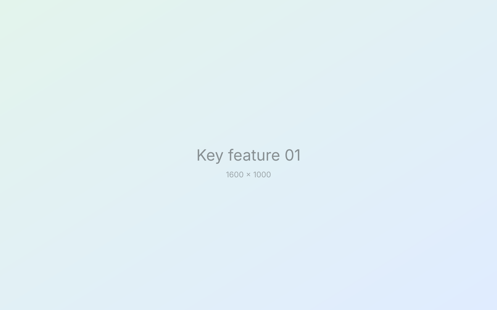
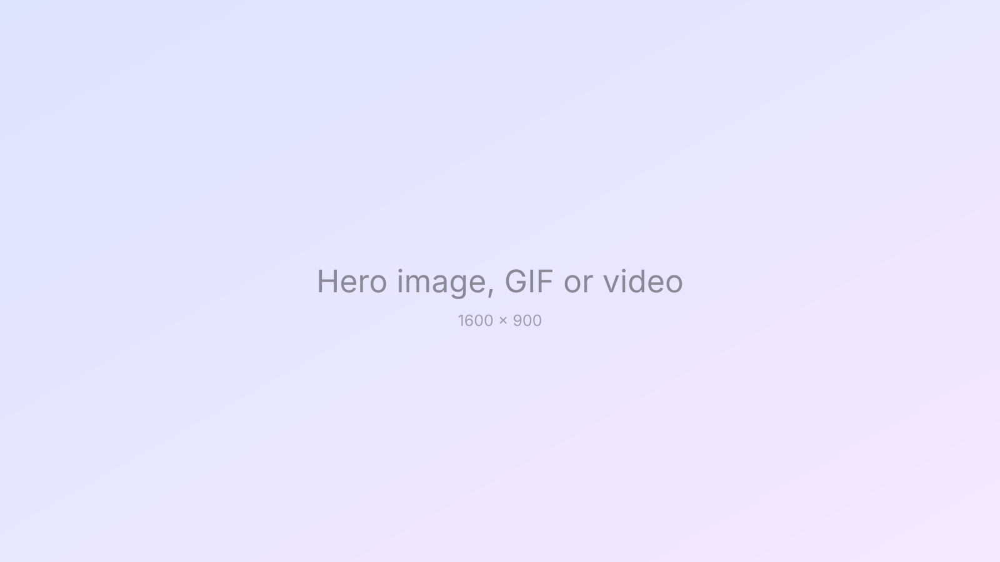
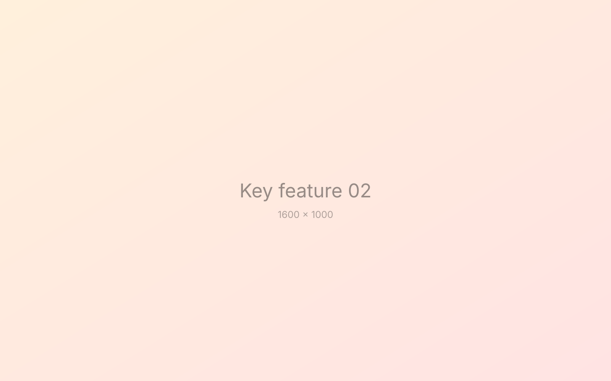
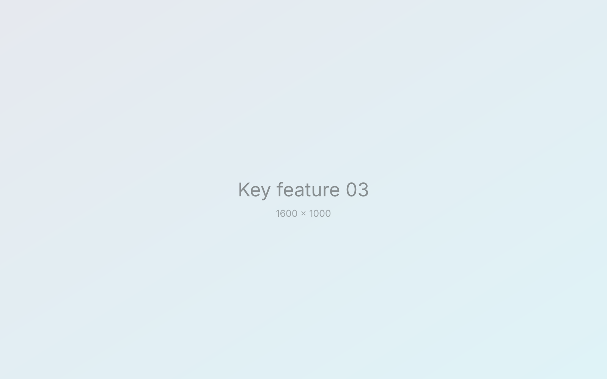
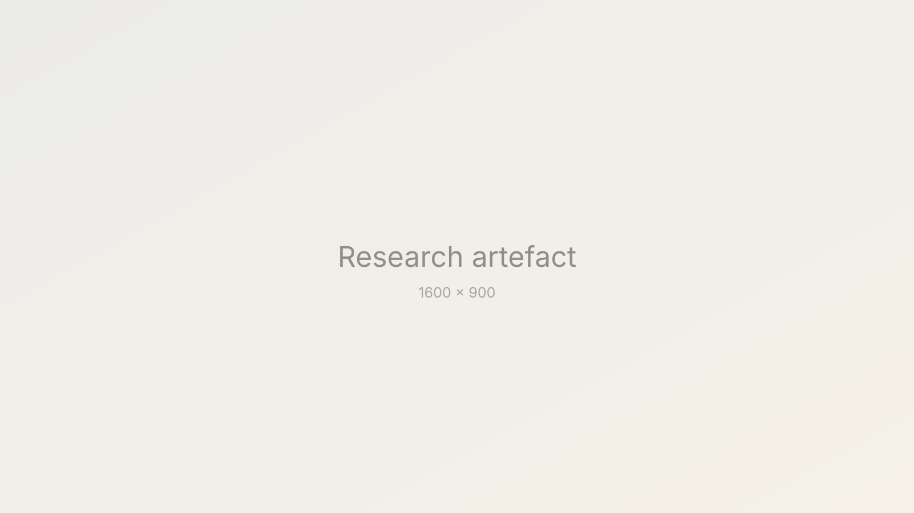
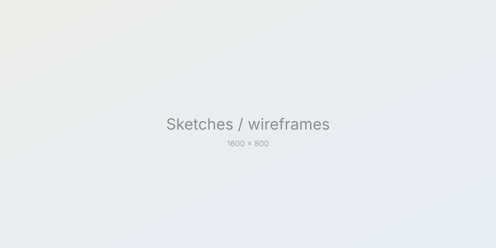
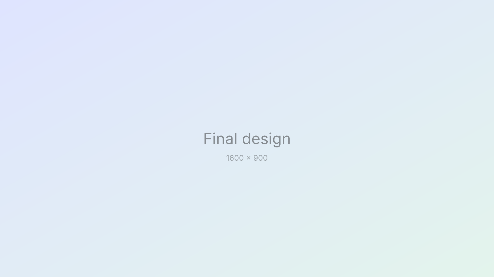

Key feature 01
Name of the first key feature
One or two sentences on what this feature does and why it matters to the user.


A short description of what this project does and why you built it.
Overview
Two or three sentences that set the scene: what the product is, who it's for and why this project mattered. Someone skimming should understand the project from this paragraph alone.
Describe the problem users or the business were facing. Be specific about who was affected and how you knew it was a problem: data, support tickets, user interviews or stakeholder goals.
What were you trying to achieve? State the goal and how success would be measured. Mention any constraints, such as time, technology or business requirements, that shaped the work.
Explain what you personally owned, from research through to final design and hand-off, and who you worked alongside.
Key feature 01
One or two sentences on what this feature does and why it matters to the user.

Key feature 02
One or two sentences on what this feature does and why it matters to the user.

Key feature 03
One or two sentences on what this feature does and why it matters to the user.

Case study
How did you learn about the problem? Describe the methods you used (interviews, surveys, analytics, competitor analysis) and who you spoke to.

Summarise what the research showed before moving on to the key insights.
Pull out the two or three findings that shaped the direction of the project.
“A memorable quote from a user interview that captures the core problem.” Participant, user interview
Explain how these insights changed or confirmed your thinking.
Walk through how the design evolved: early sketches, wireframes, prototypes and testing rounds. Show the ideas that didn't make it and why.

Describe what you learned from testing and how each round fed into the next.
Highlight the key decisions behind the final design and the reasoning behind each one, including trade-offs you had to make.

What happened after launch? Share metrics, user feedback or business outcomes, and connect them back to the original goal.
What did you learn, and what would you do differently next time? A short honest reflection shows how you grow as a designer.